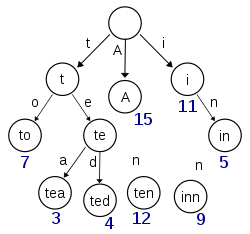

Trie
In computer science, a trie, also called digital tree or prefix tree, is a type of search tree, a tree data structure used for locating specific keys from within a set. These keys are most often strings, with links between nodes defined not by the entire key, but by individual characters. In order to access a key (to recover its value, change it, or remove it), the trie is traversed depth-first, following the links between nodes, which represent each character in the key.
Unlike a binary search tree, nodes in the trie do not store their associated key. Instead, a node's position in the trie defines the key with which it is associated. This distributes the value of each key across the data structure, and means that not every node necessarily has an associated key.
All the children of a node have a common prefix of the string associated with that parent node, and the root is associated with the empty string. This task of storing data accessible by its prefix can be accomplished in a memory-optimized way by employing a radix tree.
Though tries can be keyed by character strings, they need not be. The same algorithms can be adapted for ordered lists of any underlying type, e.g. permutations of digits or shapes. In particular, a bitwise trie is keyed on the individual bits making up a piece of fixed-length binary data, such as an integer or memory address.
Code
Applications
Common applications of tries include storing a predictive text or autocomplete dictionary and implementing approximate matching algorithms, such as those used in spell checking and hyphenation software. Such applications take advantage of a trie's ability to quickly search for, insert, and delete entries. However, if storing dictionary words is all that is required (i.e. there is no need to store metadata associated with each word), a minimal deterministic acyclic finite state automaton (DAFSA) or radix tree would use less storage space than a trie. This is because DAFSAs and radix trees can compress identical branches from the trie which correspond to the same suffixes (or parts) of different words being stored.